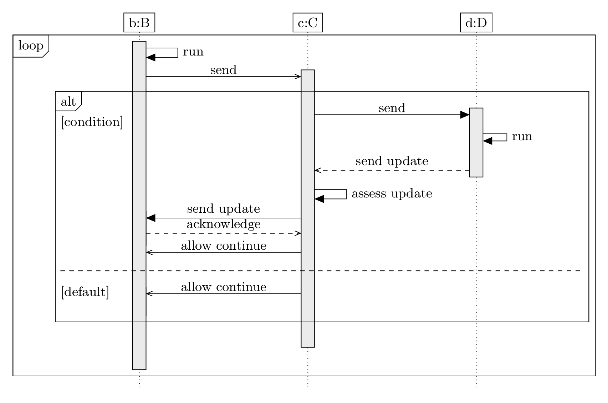

\documentclass[border=3mm]{standalone}
\usepackage[english]{babel}
\usepackage{tikz-uml}
\begin{document}
\begin{tikzpicture}
\tikzumlset{fill object = white, fill call = gray!20}
\begin{umlseqdiag}
\umlobject[class=B]{b}
\umlobject[class=C]{c}
\umlobject[class=D]{d}
\begin{umlfragment}[type=loop]
\begin{umlcallself}[op=run]{b}
\begin{umlcall}[op=send, type=asynchron]{b}{c}
\begin{umlfragment}[type=alt, label=condition, inner xsep=8]
\begin{umlcall}[op=send, type=synchron, return=send update]{c}{d}
\begin{umlcallself}[padding=1.5, op=run]{d}
\end{umlcallself}
\end{umlcall}
\begin{umlcallself}[op=assess update]{c}
\begin{umlcall}[op=send update, type=synchron, return=acknowledge]{c}{b}
\end{umlcall}
\begin{umlcall}[op=allow continue, padding=-2.5, type=asynchron]{c}{b}
\end{umlcall}
\end{umlcallself}
\umlfpart[default]
\begin{umlcall}[op=allow continue, type=asynchron]{c}{b}
\end{umlcall}
\end{umlfragment}
\end{umlcall}
\end{umlcallself}
\end{umlfragment}
\umlsdnode[dt=1.5]{b}
\umlsdnode[dt=5]{c}
\umlsdnode[dt=32]{d}
\end{umlseqdiag}
\end{tikzpicture}
\end{document}Created by David Li